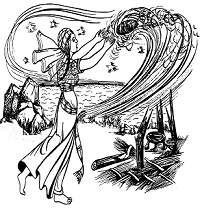

Maureen's Children offers witches young and old classes to attend. These courses can be learned either at your local Maureen's Children's Center or through Correspondence with the Maureen's Children National Headquarters in Cavanaugh Indiana. The courses detailed below are ones we hold year-round. Other courses can be found by visiting your local Maureen's Children's Center webpage.
| What It Means To Be A Witch | Finding the Conduit | Spells and Their Uses (Beginner) | Public Speaking | Magic Control and Meditation | Magic As Self-Defense |
|
This course explains scientifically, societally, historically, and psychologically what it means to be a witch. Discussions will include history lessons, philosophical questions, and introduction to various aspects of witch life and culture.
(Beginner Course)  |
Students will be guided in the practice of discovering their magical conduit. This can be a stressful, energy-draining exercise, so caution is required.
(Beginner Course) |
This course teaches students about a variety of low-level spells. These include basic healing and minor charms. A large portion of this course will illustrate the proper procedure for using a spell while practice is performed.
(Beginner Course) |
This course guides students on how to become effective public speakers. Special occasions during this course will be outings to peaceful protests, marches, and council meetings.
(Beginner-Intermediate Course) |
Students will learn how to meditate and control their magical abilities. The course includes practical and theoretical components.
(Intermediate Course) |
Maureen’s Children does not advocate the use of magic in a violent nature, but we understand that there are times when self-defense is necessary. This course teaches students how to use their magical abilities in a defensive manner.
(COURSE BY MC-PERMISSION ONLY) |